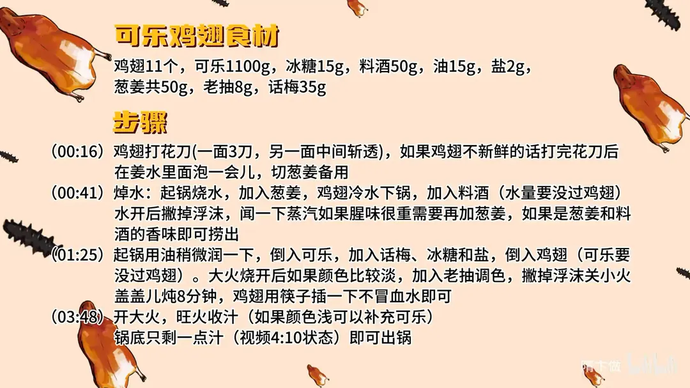

可乐鸡翅
隋卞一做。鸡翅 11 个一面打 3 刀、另一面中间斩透，冷水下锅加葱姜和 50g 料酒焯水去腥；可乐 1100g 配话梅 35g、冰糖 15g 小火炖 8 分钟，最后大火收汁到锅底只剩一点汁。
原视频：https://www.bilibili.com/video/BV18x4y1z7uc
食材
鸡翅、可乐 等 9 样
| 类别 | 用料 | 用量 |
|---|---|---|
| 主料 | 鸡翅 | 11个 |
| 主料 | 可乐 | 1100g |
| 配料 | 话梅 | 35g |
| 配料 | 葱姜 | 共50g |
| 调料 | 冰糖 | 15g |
| 调料 | 料酒 | 50g |
| 调料 | 油 | 15g |
| 调料 | 盐 | 2g |
| 调料 | 老抽 | 8g |
步骤
- 打花刀：鸡翅一面打 3 刀，另一面从中间斩透。如果鸡翅不够新鲜，打完花刀后在姜水里泡一会儿；葱姜切好备用。
- 焯水：起锅烧水，放入葱姜，鸡翅冷水下锅，加 50g 料酒，水量要没过鸡翅。水开后撇掉浮沫，闻一下蒸汽——腥味很重就再加葱姜，闻着是葱姜和料酒的香味即可捞出。
- 炖煮：起锅用 15g 油稍微润一下锅，倒入 1100g 可乐，加话梅、冰糖和 2g 盐，再倒入鸡翅，可乐要没过鸡翅。大火烧开后颜色偏淡就加 8g 老抽调色，撇掉浮沫后关小火，盖盖儿炖 8 分钟，筷子插鸡翅不出血水即可。
- 收汁：开大火旺火收汁，颜色浅的话可以补一点可乐，收到锅底只剩一点汁即可出锅。
小贴士
- 鸡翅不新鲜时，打完花刀先在姜水里泡一会儿，再焯水去腥更彻底。
- 判断是否炖好就看筷子：插进去不冒血水就行。
讲解要点
难度：★★☆☆☆（新手可做，难点是收汁的火候和颜色控制）
为什么这么做
- 一面打三刀、另一面中间斩透：花刀让可乐汁渗进肉里，八分钟也能入味；中间斩透还能一眼看出熟没熟。
- 不新鲜先泡姜水，焯水水要宽：姜水先压腥味，焯水时水没过鸡翅，血沫才漂得出来；开锅闻一下蒸汽，只有料酒和葱姜香就说明料够了。
- 刚烧过水的锅先用油润：后面要旺火收汁，糖分黏锅很难刷，提前润锅，收完汁好收拾。
- 可乐里加话梅：纯可乐的香气单薄，话梅的果酸和香气把可乐味托得更浓，回口还多一点清甜。
- 可乐必须没过鸡翅：汁少，收完以后表面挂的汁不匀，味道也就淡了。
- 小火焖、大火收：小火焖八分钟让鸡翅熟透入味不糊底，最后大火把糖浓缩成糖浆，才能裹满鸡翅。
- 盐是甜味的底：只甜不咸，甜味一下就飘过去；有盐托着，甜才有厚度。
容易翻车
- 可乐没没过鸡翅，收完汁挂不上，吃着寡淡。
- 一直大火或不看着锅，糖分糊底，汁发苦发黑。
- 汁没收到糖浆状态就关火，鸡翅水汪汪挂不住汁。
- 忘了放盐，甜得发飘，没有厚度。
- 鸡翅不新鲜又没泡姜水，腥味压不住。
热评补充
- 崂山可乐本身香料味足，用它做几乎不用再加别的香料。
- 不先煎鸡翅全靠鸡翅本身的品质，买不到好鸡翅的话，建议先把鸡翅煎一下再炖。
原片尾卡

原片文案
AI 字幕校准稿
我天天跟小李聊天，突然发现他不会做可乐鸡翅。我说我会做，只不过你说我那种方法不太好吃，那就让你看看特级厨师怎么做可乐鸡翅。
鸡翅拿过来之后打花刀，便于入味，中间再扎一刀，让它在煮的时候汁水能渗进去。如果你真买的鸡翅，真的不确定好不好、感觉不新鲜，打完花刀之后就加上姜水，多泡一会儿。
好，开火。水里面加上葱姜，把鸡翅倒进去，加点料酒。焯鸡翅的水要稍微宽一点，没过鸡翅为一个标准，出了血沫之后是可以打掉的。开锅的时候闻一闻锅里的热气：如果腥味很重，那你就再加点料就行了；如果闻着是有淡淡的料酒香、还有葱姜的香，证明你这个料下够了。捞出来。拿油稍微润一下锅——刚烧过水的锅，一会再烧鸡翅的时候还要旺火收汁，收完汁那锅就很不好刷了，所以要拿油给它润一下。
倒可乐。这个就跟你们之前看到的不一样了，里面要加入话梅：单纯可乐的那个香味不够，话梅的味儿会把可乐味变得更浓郁一些，有那么淡淡的一点点话梅的味道。再搁点冰糖，盐也化进去，把鸡翅倒里边。可乐以没过鸡翅为一个标准；如果你可乐少，鸡翅虽然说是熟了，但收完以后那个表面挂的就没有那么匀、没有那么多，吃的味儿就会更淡，很关键。
烧开之后我们看一下颜色，这色有点淡，再补点老抽，把上面这一点沫也给他撇一下。关小火，盖上盖子焖上它 8 分钟。到时间了，夹起一块鸡翅，拿筷子插一下，不冒血水就行了。
可以旺火收汁了。开大火，旺火一烧它就开始粘稠，浓缩就变成了一个糖浆，会把鸡翅裹得满满的。一边收的时候一边看着点颜色，如果一开始加的时候加浅了，这会儿还可以再补。可以了，关火，看底上几乎都没有汁了，有一点这种状态就可以了。
你吃的外面那汁酱的味，还真不是纯可乐味。一进嘴可乐那种甜香，还有鸡肉那种脂肪的香，特别特别的浓郁，回口还有一点点话梅的那种清香；只要不告诉你放话梅了，那可能你也吃不出来。而且里面加了盐，甜香的基础就是盐必须得托着它们，所以吃着还舒服一些；简单的甜那就嗖一下飘过去了，这个明显能吃到甜味，它是有厚度的。